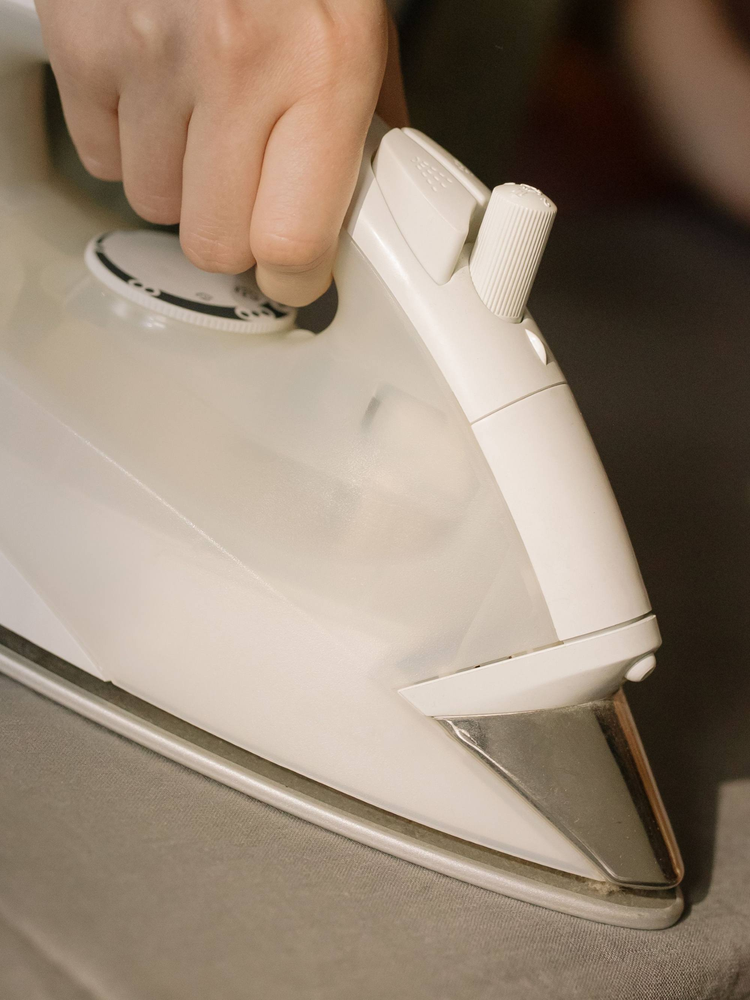
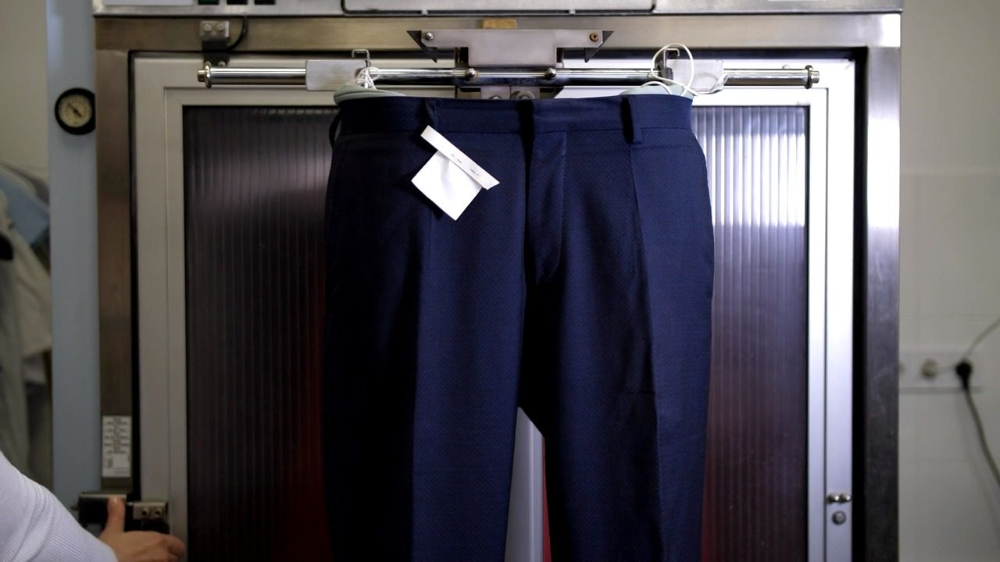
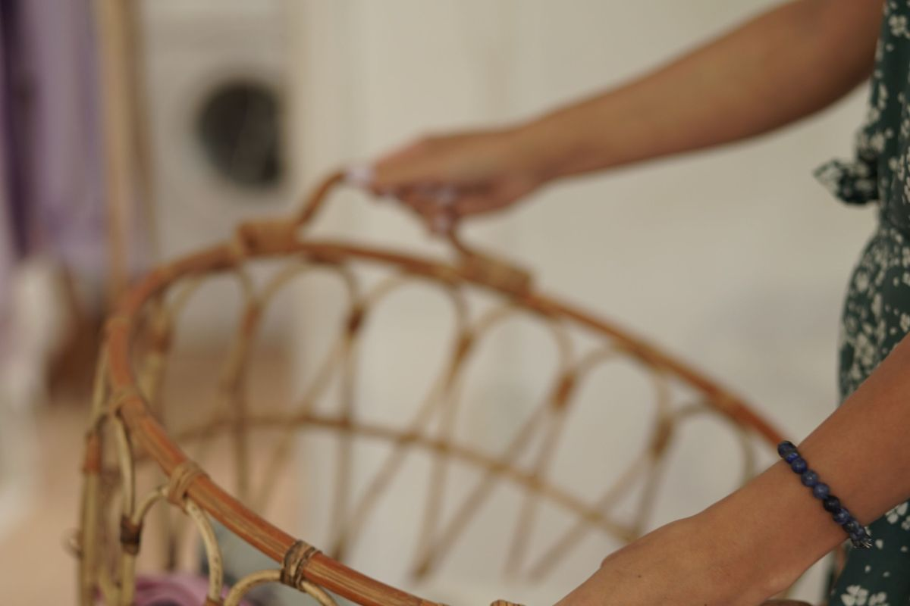
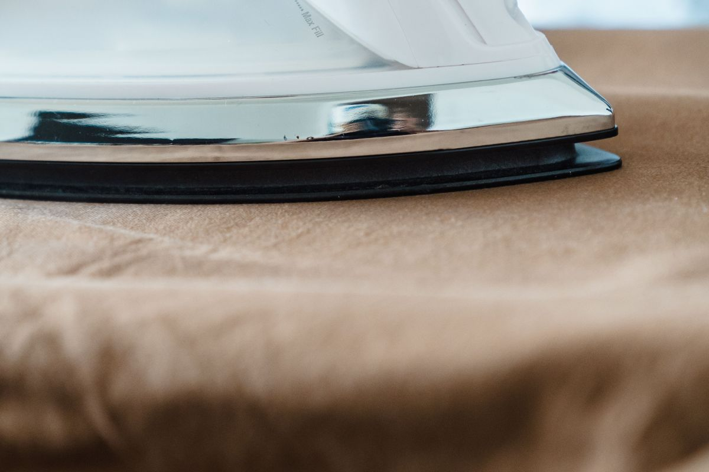

Lavandería con retiro a domicilio · Ñuñoa
Deje la ropa y siga con su día.
Lavado por kilo, planchado, plumones y ropa delicada. Más de quinientas reseñas en Google y retiro a domicilio: usted no tiene que venir hasta acá.
- 559reseñas en Google
- 5tipos de servicio
- 0viajes que tiene que hacer
- 404lo que devuelve hoy su web
La pregunta de siempre
Qué puedo mandar,
y cuándo lo tengo de vuelta.
Nadie lo escribe en ninguna parte, así que hay que llamar para preguntarlo. Acá está, con el plazo al lado y si pasan a buscarlo.
| Qué manda | Cómo se cobra | Vuelve en | Retiro |
|---|---|---|---|
| Ropa de casa por kilo | por kilo | 24 h | Sí |
| Planchado | por prenda | 48 h | Sí |
| Plumones y frazadas | por pieza | 72 h | Sí |
| Ropa delicada y de vestir | por prenda | 72 h | Sí |
| Ropa de trabajo | por kilo | 48 h | Conversado |
Los plazos son de ejemplo y cuentan desde que la ropa entra al local, no desde que la pasan a buscar. Sin precios: los pone la lavandería.
Lo que conviene decir al mandar
- Si hay una mancha, de qué es y hace cuánto. No es lo mismo vino de anoche que aceite de hace un mes.
- Si una prenda no puede ir a secadora. Se separa antes, no después.
- Si necesita algo para una fecha. Se ordena la carga distinto.

Lo que se plancha se cuelga, no se dobla. Vuelve en percha y con funda. Ejemplo
Sin salir de la casa
Cómo se pide el retiro.
Tres pasos, un solo mensaje. Escriba lo que manda, dónde está y cuándo puede recibir: con eso se coordina.
-
Diga qué manda
«Dos bolsas de ropa de casa y un plumón de dos plazas». No hace falta pesar nada: se pesa acá.
-
Diga dónde y cuándo
Dirección en Ñuñoa y un rango de horas en que hay alguien. Si es edificio, el nombre de conserjería sirve.
-
Le confirman la vuelta
Le dicen el día en que vuelve la ropa antes de llevársela, no después. Ejemplo
Vuelve doblada, no vuelve en bolsa.
La ropa de casa vuelve doblada y separada por tipo, y lo que se plancha vuelve colgado. Es la diferencia entre una lavandería y una máquina.
Cómo se entrega exactamente lo confirma la lavandería. Ejemplo

El vapor hace lo que la plancha de la casa no: deja la prenda lisa sin brillo y sin marcas.
El local
Máquinas grandes, no las de la casa.
Una lavadora doméstica hace cuatro kilos y se demora tres horas. Acá la carga entra completa y sale el mismo día.
-
Lavado por kilo
La ropa de casa se pesa, se separa por color y se lava junta.
Carga mínima: 3 kg
-
Plumones y frazadas
Lo que no cabe en una lavadora de casa. Se seca completo, no a medias.
Hasta 2 plazas
-
Planchado a vapor
Camisas, pantalones de vestir y uniformes. Vuelven colgados.
Por prenda
-
Ropa delicada
Lana, seda y prendas con etiqueta de lavado en seco se ven aparte.
Se revisa antes
Cómo se ve el trabajo terminado.
Fotos del rubro, no del local: cuando la lavandería nos pase las suyas, se cambian todas.


Escribir
Ñuñoa, y le pasan a buscar.
Lo más rápido es WhatsApp con las tres cosas del formulario de arriba. Si prefiere hablar, el mismo número contesta llamadas.
- WhatsApp y teléfono
- 9 9593 1443
- Comuna
- Ñuñoa, Santiago
- Dirección
- Falta: la confirma la lavandería
- Horario
- Lunes a sábado, 9:00 a 20:00
- Cobertura del retiro
- Ñuñoa y comunas vecinas
- En Google
- 559 reseñas (27-08-2026)
Para el dueño
Qué es esto y qué no.
Qué es
Una propuesta de sitio web hecha por nuestra cuenta. La lavandería no la encargó ni la ha revisado. Dimos por cierto sólo lo público: las 559 reseñas en Google (27-08-2026), el número de contacto y el retiro a domicilio que anuncian.
Qué es ejemplo
Los plazos, los tipos de servicio, la carga mínima, la cobertura del retiro, el horario y la dirección. Todo va marcado con línea punteada. No hay precios a propósito: los pone usted.
El dominio que ya tienen
maslavanderias.cl existe, pero el 06-09-2026 la portada devolvía un error 404 de dominio sin conectar. Quien lo busca llega a nada. Esta página no carga nada de terceros y puede quedar ahí en un día.